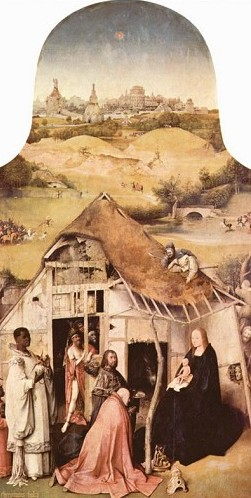

“圣诞节”庆祝源起面面观
冯冯
迷失在未来 / 誊录
世人以十二月廿五日为耶稣基督圣诞，盛大庆祝，耶教信徒固然以此日为耶诞，非耶教徒亦在此日庆祝“圣诞”、寄贺卡、送贺礼、开舞会、火鸡大餐、公司放假，十分热闹。
其实，耶稣基督的生日不是十二月廿五日，有此基督教学者已经考据出来耶稣根本不是在那一天出生，此一公认的耶诞于圣经新约完全无据，我们不妨摘录一些这类意见，综述如后：
在公元四世纪以前，并无庆祝耶稣生日，新约亦无载何日是衪的生辰，各门徒的笔记亦无提及，《使徒行传》、《罗马书》、《哥林多前后两书》等等也从未提到庆祝圣诞，直至第四世纪才由罗马教廷宣布此日为耶稣生日予以庆祝。十二月廿五日原是罗马人传统上的狂欢节日，属于外道，改信了耶稣，罗马人仍于此日庆祝节日，教廷只好顺从民情，宣布此日为耶稣生日，巧妙地热闹的节日庆祝转变为耶教节日。
根据一九一一年版本的《天主教百科全书》（CATHOLIC ENCYCLOPEDIA），在“基督诞辰”(CHRISRMAS)项下，是这样写的；“早期的教会并无庆祝基督生日……此一庆祝之起源，是在埃及，原是外道的风俗，在一月份左右举行的庆祝节日，后来演变为基督的生日。”
在同刊的“耶稣生辰”（NATAL）项下：早期的天主教神父欧理真（ORIGEN）说：“圣经内容并无记载任何庆祝生日的酒会或盛宴，只有罪人们，例如埃及法老（王）与犹太的希律王，才奢侈庆祝他们自己的生日。”
《美国百科全书》，一九四四年版（ENCYCOLPEDIA AMERICAN）说：”基督教早期教会都无庆祝基督生日，基督徒庆祝的是杰出人士的死亡，而不是生日。”天主教的领圣餐（COMMUNION）是新约所规定的仪式，事实上是纪念基督之死，是以信徒接受神父施与的面片象征耶稣的身体，红酒象征耶稣的宝血。此种仪式，有些学者推论，是源起太古时代，在石器时代之前，先民分吃其父母或亲人的尸肉与血液。彼时行猎不易获得食物，不待断气，死者就已被子女及族人分割吃掉了，此种传统，至今仍可见于新几内亚、南美洲亚玛逊河域森林与非洲腹地的落后民族，父母亲人伤重不能行动或病重或年老，就被子女烹而食之。非洲的巨型黑猩猩也是如此，而且是活生生撕了吃，他们不会用火烤肉，也常抢他人的小猩猩来活活吃掉，从动物记录电影看到不少，学者们的推论，不算荒谬。弗洛伊德医生的心理分析学中就提过：儿子是有潜在的仇父意识；希腊神话中也有提及几个成年的儿子合力把父亲活活烤吃来吃掉！从基督教义来说，耶稣是替世人赎罪而死于十字架上，从心理学上来看与考古来看，所谓“赐圣体”，吃耶稣基督的血与肉，乃是太古时代活吃父亲血肉的遗风，荒谬？不妨多研究才下断语吧！
一九四六年版本的《大英百科全书》（ENCYCLOPEDIA BRITANNICA）也说；“早期的教会并无庆祝基督的生日。”耶稣基督并未说出衪的生日是何日，衪的门徒也从未提及，圣经也毫无提及，是后来从外道带来的庆祝。
《大英百科全书》又说：“公元第四世纪，罗马教廷开始纪念基督之死，第五世纪才正式承认十二月廿五日为基督生日，此日原是罗马太阳神的生日，是一个狂欢节日。”
罗马帝国，被中国古代称为“大秦”，不知何故？罗马人却称中国为“秦”，真是把人弄糊涂了。耶稣出生时代，大约是中国汉平帝元始元年，是佛陀出生后的五百四十五年。在之前的两年，既是汉哀帝元寿元年，西域大月氏国（中亚西亚）特使伊存已来华，口授《浮屠经》给博士景卢，是佛教传入中国之始，这是正史所载，若不讲正史，则佛经载有文殊菩萨早来华于五台山弘法，时间或在周朝时代。六、七年后，王莽篡权，自立为帝，公元九年，是王莽建国元年，王莽贬降西域诸国王位，降为“侯”爵，于是西域诸国叛离中国，改事匈奴，与中国断绝关系，佛教传华完全中断。
罗马太阳神与埃及太阳神，两者的生日都是十二月廿五日，罗马风俗可能是受埃及传过去的，埃及有一万二千年的历史。（从考古出土文物碳十四放射测出的，东南亚的寮国出土的黑陶，测定也有一万年历史（详见美国国家地理杂志多次报导）。我们中国人以七千年文化自豪，很应该四面多看看，别再小看那些夷狄蛮荒之邦。）
耶稣大约三十一岁，骑骡子进入耶路撒冷传道之时，大约是中国后汉光武帝刘秀推翻王莽之后，建武七年左右，其时中国盛行翻译思想与道家神仙信仰。在印度，是波斯王孔德化斯（GONDOPHARES）统治犍陀罗，该地是希腊亚历山大大帝征服印度后，由希腊留驻军民所建之都市，希腊人传入石雕神像艺术，演变为佛教雕像，称为犍陀罗佛雕艺术，后来经由西藏传入中国，影响了大同佛教风格。贵霜帝国是希腊血裔民族所建立，最初在中国青海地带，后来向西占领了中亚西亚地区与波斯，贵霜帝国虽是希腊人，却笃信佛教，对于早期传播佛教来华有巨大的贡献，犍陀罗佛雕，可能是贵霜帝国所传入中国，早期佛教面貌仍有希腊人样子，后来变为印度人面貌，后世转为中国人面貌。
耶稣基督被钉十字架之时，大约正是贵霜帝国兴起之时，是后汉光武帝七年左右，汉明帝在永平七年（公元六十四年）夜梦西方金人放光，乃遣使秦景赴西域取佛经，可能是去了贵霜帝国取经，那已在耶稣受难升天之后的三十多年了，秦景与印度僧人竺法兰等携《四十二章经》返洛阳，那是公元六十七年的事。查对这些年代，蛮有趣的。
回到本题，耶稣到底是否在十二月廿五日出生？新约路加福音第二章第八节说：“在伯利恒之野地里，有牧羊人，夜间按着更次看守羊群，主的使者站在他们旁边，主的荣光四面照着他们，牧羊人就甚害怕，天使对他们说：‘不要惧怕，我来报给你们大喜信息，……今天在大卫城里，为你们生了救主，就是主基督，你们要是看见一个婴儿，包着布，躺在马槽里，那就是记号了。’忽然有一大队天兵，同那天使赞美上帝：‘在至高之处，荣耀归于上帝……’众天使就离开他们升天去了，牧羊人彼此说；‘我们往伯利恒去，看看成就的事……’就寻见玛丽亚与约瑟和那婴孩躺在马槽里……”（太空队员一批乘发光飞碟降落来向牧羊人报佳音）【注一】：本文所引用的圣经经文章句，系作者以其收藏十多年的圣经（香港版本）为参考书，此与目前台湾出版的圣经版本，文字遣词上稍有出入，敬告读者。 路加福音并无说耶稣生日是哪一天。从巴勒斯坦地带的气候来看，十二月已是冬天雨季，不能牧羊在野外了，牧人都在十月十五日之前，趁着天气还晴朗尚未下雨，就连夜放羊，让羊儿吃饱一点，这些游牧民族是不会再寒冷下雨的冬天连夜野地放羊的。旧约雅歌（所罗门之歌）二章十一节说：“冬天已过，雨水止住……”旧约“以斯拉记”十章九节：“九月廿日，……因下大雨……”十三节：“又逢大雨……”看，连九月廿日都是大雨季节了，冬天也是雨季了，游牧的牧羊人如何可以连夜在野地牧羊？如何在大雨中牧羊而看到天使（太空队员一群）从天而降向之报佳音？由此反推，牧羊人夜牧，必是在九月雨季开始之前，不可能在十二月份，中东气候，古今都是冬天下雨，再从此经文来推断，耶稣不可能在十二月廿五日出生，最大可能是在九月初或九月之前，正当以色列每年前往城市缴税之时（八、九月），由于旅途人多，旅馆、客栈客满，耶稣的父亲约瑟只好带玛利亚暂住在伯利恒的一处马槽，天上的一颗星，飞到马槽上空停住（发光的飞碟才会如此随意煞车，天然的流星断无此可能），把来自东方（可能是阿拉伯）的三个有钱人（一说是王）引来参拜圣婴。
另一种推论：“犹太人古来习俗是在早春──逾越节（PASSOVER）未到雨季之前，把羊群赶到野外去吃草，连夜放羊。（犹太人的历法，成为“玛辙斯瓦月”（MARCHESVAN MONTH，不懂希伯来文，只好音译）──相当于现代太阳西历的十月份，以色列游牧民族习惯在此雨季月份开始之前，在野地放羊夜牧，日夜放羊，可说整个夏季都如此露天日夜牧羊，到十二月份雨季，已无人在野地夜间牧羊了，所以推测耶稣不可能在十二月出生，甚至不可能十月份以后，必定是在九月或九月之前的秋高气爽季节。
至于耶稣出生的年份，也没有任何文献资料可资考据，圣经新约完全没提他的出生年月日，犹太任何史书都只字未提。罗马帝国的史书相当翔实，可比中国的史记，它有提及征服统治犹太国的事，无论大小的记录，但是没有一字提及耶稣基督其人其事。按理，基督被犹太人群众鼓噪示威要求罗马总督彼拉多把耶稣判钉十字架死刑，这样的重大事情，彼拉多的身边随从、秘书不可能只字不提，罗马当局史册也不可能忽略，因为耶稣事件很可能引起民变推翻罗马人的占领，后世对于耶稣出生之年，也只是由梵谛冈教廷根据新约提到彼拉多，从而依据彼拉多统治犹太的年代时间而推测出来的。
另外一种推算方式，是从旧约的大卫王的家谱年数来推算（耶稣是大卫王的子孙），我不知教廷学者是用上述哪一种方法推算，相信不会离开这两种可能性，因为任何文献，包括“死海经卷”都没提及耶稣生年。一般相信耶稣上十字架之时大约是三十三岁，比照彼拉多在耶路撒冷的统治时间，推算出来耶稣的生年，由教廷公布，万国采用成为公元的起源。
至于耶稣的人间父亲则是约瑟木匠，母亲是玛丽亚，他天上的父亲是上帝耶和华──可能是神，也可能是太空人或外星人而被视为神。耶稣的早期职业，是做木匠的，后来成圣，衪的早期低微木匠身分丝毫不影响其圣人地位，相反地，更显出他的伟大。
关于耶稣出生地点，公认是在伯利恒的马槽，因此成为“马槽圣婴”，出身微寒，更显其伟大，也有些学者争论说耶稣是在客栈出生的，但很少人采信此一说。
无论多少学说推翻了耶稣的生辰，甚至推翻了耶稣其人的存在，都不能推翻耶稣留下的伟大的爱与理想和衪的牺牲精神，本文自不能例外，本文只是讨论耶稣的生辰之谜，就像有人去讨论佛陀或孔子的生辰是何时，纯粹从推理出发，并无不敬。
 根据《宗教百科全书》（NEW SCHAFF──HEROG）的ENCYCLOPEDIA OF RELIGION KNOWLEDGE记载：“十二月廿五日原是外道布鲁玛利亚（BRUMALIA）的狂欢节日，十二月十七至廿四日是土星教（SATURNALIA）的节日周，都是庆祝一年中最短的一天，和庆祝“新的太阳”罗马人在这一周的狂欢庆祝，虽信了基督也仍不改变，依然庆祝此两个外道狂欢节日，人山人海，万人空巷，纵酒歌舞，欢闹彻夜达旦，反而冷落了对基督的信任。天主教廷乃不得不移岸就船，宣布十二月廿五日为基督生辰，十七至廿四日为耶稣诞生周，政策是成功的，从此它成为基督教的圣诞节日，纪念耶稣，人人欢乐庆祝，不再是外道的纵欲狂欢节日了。（罗马帝国一向是崇拜外道偶像神祇的，直到公元第四世纪，罗马帝国的君士坦丁大帝（CONSTANTINE）宜布以耶稣教为国教，罗马人才渐渐改信耶教，但是仍然庆祝外道的狂欢节。）后来又有摩尼教出现，这是斥耶的外道，教主摩尼是波斯人，定十二月廿五日为太阳神的生日，又转变为“上帝之子的生日”。
根据《宗教百科全书》（NEW SCHAFF──HEROG）的ENCYCLOPEDIA OF RELIGION KNOWLEDGE记载：“十二月廿五日原是外道布鲁玛利亚（BRUMALIA）的狂欢节日，十二月十七至廿四日是土星教（SATURNALIA）的节日周，都是庆祝一年中最短的一天，和庆祝“新的太阳”罗马人在这一周的狂欢庆祝，虽信了基督也仍不改变，依然庆祝此两个外道狂欢节日，人山人海，万人空巷，纵酒歌舞，欢闹彻夜达旦，反而冷落了对基督的信任。天主教廷乃不得不移岸就船，宣布十二月廿五日为基督生辰，十七至廿四日为耶稣诞生周，政策是成功的，从此它成为基督教的圣诞节日，纪念耶稣，人人欢乐庆祝，不再是外道的纵欲狂欢节日了。（罗马帝国一向是崇拜外道偶像神祇的，直到公元第四世纪，罗马帝国的君士坦丁大帝（CONSTANTINE）宜布以耶稣教为国教，罗马人才渐渐改信耶教，但是仍然庆祝外道的狂欢节。）后来又有摩尼教出现，这是斥耶的外道，教主摩尼是波斯人，定十二月廿五日为太阳神的生日，又转变为“上帝之子的生日”。
信仰“东正教”的信徒，则在一月六日庆祝耶稣基督降生，希腊、阿美尼亚、叙利亚……等地区以一月六日为耶稣生日，他们抨击罗马天主教徒以十二月廿五日为耶诞就等于是崇拜太阳，是偶像崇拜违反圣经的教训：又指称是外道赛立得斯人臆造的生日（CYRITHUS）。
圣诞起源于罗马的外道狂欢节，罗马狂欢节又源起于什么呢？
有些学者不免又将罪魁推为巴比伦了。圣经旧约、新约都处处大骂巴比伦为邪恶之邦，甚至于在新约最后一卷“启示录”之中也在大骂巴比伦是大淫妇。从犹太人的道德观念来看，巴比伦是一个邪淫的外道罪国，世上一切的罪恶都源出于巴比伦。
 |
事实上，巴比伦是古代最有文化的民族之一，出土的文物之中，证明了古代巴比伦在一万年之前已经制造了电池，这个电瓶现存放 于大英博物院，古代巴比伦的文化很高，思想开放比犹太人的文明高得多，巴比伦生活也比犹太人富裕，国力比犹太人强盛，巴比伦王约雅芹（JEHOIACHIN）曾经征服犹太与以色列两国，将他们的王与贵族都俘虏押回巴比伦去做奴隶，犹太民族被巴比伦人奴役大约有七十多年至一百年之久。因此犹太人痛恨巴比伦入骨，就在圣经中诅咒巴比伦，一直诅咒到永远，凡是什么罪恶都一律指巴比伦是罪魁祸首，犹太的先知们，世世代代预言巴比伦的沦亡。
巴比伦古时的王都是在迦勒底（CHALDEA），是一个繁盛的大都会，也是人文荟萃之地，古代世界七天奇迹之一：“空中花园”就是在此地，是堪可媲美埃及金字塔与中国万里长城的伟大古代建筑成就。巴比伦的位置是在幼发拉底河流域最肥沃的地区（今天是叙利亚、伊拉克等国所分占）。巴比伦的诗歌、文学、音乐、艺术、建筑、军事、科学……无一不是古代的领袖，巴比伦被现代史学称为人类文明发生的摇篮，现代考古学家经常在叙利亚境内发掘古代巴比伦的古物，送到西方国家主要博物馆去，每每有惊人的新发现，巴比伦的文明，比中国、印度和埃及与希腊都先进。举一例来说，今世著名的叙利亚旅游胜地古迹红土石山雕凿出来的皇宫神殿，就是古代巴比伦人的艺术伟构。
在极端嫉妒巴比伦与仇恨巴比伦的心态之下，犹太以色列人（古时犹太与以色列是两个兄弟国家）现在并为一个以色列。犹太是亚伯拉罕的长子，以色列是幼子，希伯来民族最早的祖先亚伯拉罕，因居于希伯来（地名）而从此成为希伯来民族，他有十二个儿子，他灭亡了迦南地区的原有民族，占领其他分封十二子，成为希伯来民族十二支派。
再追溯上去，亚伯拉罕原名亚伯兰，感应于耶和华之命令而改名亚伯拉罕，他是他拉的儿子，是他带族人因逃饥荒而移居当时最富贵的埃及帝国，是自愿去埃及谋生，后代繁盛成为多达数百万人，并非埃及人将他们掳去的，旧约的出埃及记说希伯来人被埃及人掳去为奴隶，达四百年之久，后来耶和华派摩西大显神通吓服了埃及法老王，不得不准希伯来人全族离开埃及，这就是有名的宗教宣传电影“十诫”的故事。事实上，根据现代考古家的研究，埃及的古代史籍，素称完备，却毫无记载希伯来奴隶数百万人为了自由而造反而出埃及，旧约可能是太夸张渲染了，或者摩西所率领出埃及的希伯来人只有数百人或数十之众，而且他们并非奴隶，而是佣工，是低资的贱民劳工，受雇于埃及人，所以才得自由离境，若是被埃及人拥有的奴隶，如何可以自由行动？奴隶的领袖摩西又如何可以自由去面向埃及法老或表演神通？埃及帝皇向来是被视为天神化身，是不会接见平民的，更不可能接见奴隶，摩西在皇宫向埃及皇帝大骂，又把水变血，威胁皇帝……这些都是旧约自说自话的神话故事而已。别说古代的奴隶见不到专制的帝皇，现代的元首也禁卫森严，哪容平民随便闯进去大骂恐吓？摩西使天降蛙灾，现代在热带也年年有蛙灾之患，难道也是摩西做法？摩西用权杖一指，红海海水分开，让希伯来人走过红海，埃及追兵来到，海水就复合把他们全部淹死了，这神话天真得可以，埃及史册上却没有这一段法老王全军被海水淹死的记录。事实上，埃及王并无追赶希伯来人，摩西是熟知西奈半岛的地形的，他曾在彼游牧廿年，他知道海上的潮汐时间，他带领族人在退潮后走过最狭窄只有数百尺的苏以士内湾的卢海（REED SEA，现仍存在，每次潮退即露出陆地走廊），而不是RED SEA，从苏以士到迦南，骆驼也须走三天，怎么摩西却要走上四十年才走到？把族人带到西奈荒野中流浪四十年？可见他们是游牧民族，而且迦南地带原住民族强盛，使希伯来人无法攻占。
这又扯远了，回到原题吧。从上文起只是要说明亚伯拉罕是谁，他的父亲是他拉，祖父是拿鹤，再追上去，拿鹤的父亲是西鹿，西鹿的父亲是拉是，拉是的父亲是法勒，法勒的父亲是希伯，希伯是父亲的沙拉，沙拉之父是亚法撒，亚法撒的父亲是闪，是闪在一百岁那年生的，闪是挪亚的长子。
挪亚是亚当的子孙，耶和华叫他造了方舟，躲过了大洪水，挪亚有三个儿子，长子名叫闪（SEM）（就是今天希伯来人又称闪族的来源），今天英文字反闪族（ANTI-SEMETIC）源出于此。诺亚的另两个儿子是含（CUSH）与幼子雅弗（JAPETH）。含的长子为古宝，古宝的长子宁录（NIMROD）就是迦底亚人的祖先，是巴比伦的建国帝王。
再简言之，巴比伦皇室之祖宁录是挪亚的次子含的子孙，希伯来人之王亚伯拉罕是挪亚的次子含的子孙，希伯来人之王亚伯拉罕是挪亚长子闪的子孙。所以，宁录与亚伯拉罕是堂兄弟，是同一族的人，本是同根生，却成为世仇，水火不相容（今天的以色列与阿拉伯正是如此）。 看了上文，就知巴比伦与希伯来原是同源同种同族，巴比伦征服了希伯来人，希伯来人咒诅了巴比伦几千年，这就是由来，不研究历史，光信圣经，就很难明了为何犹太、以色列人那么痛恨巴比伦，要咒诅它灭亡。
希伯来裔的学者很容易把一切罪行推到巴比伦身上，巴比伦已不存在，也无人与之争论，根据希伯来裔学者的报告，在各种罪行之中，巴比伦王宁录创造了很多淫邪的庆祝花样，包括十二月廿五日“太阳神诞”，他而且也是建造“巴比”高塔要上天去的领袖（后来被耶和华变乱他们口音而致建塔失败，我怀疑这座高塔并不是塔，而是一座太空火箭飞船的发射架，所以才招致太空队耶和华之忌）。巴比伦之名，就是来自这座巴比高塔，巴比伦是古代西方最古老的第一个帝国，宁录（NIMROD）的名字，来自希伯来文MARAD，意思就是“反叛者”，指称他是反叛犹太人的叛徒。
希伯来学者们说，宁录是一个世上最坏、最邪恶的恶魔化身，什么淫邪的事都无所不为，他甚至于强娶了他的生母森美拉密斯（英文SEMIRAMIS）。宁录是意外地在壮年暴亡的，这是上帝耶和华惩罚他的乱伦淫行，宁录的生母（也是他的妻子）成为巴比伦女皇，其淫虐暴行更甚于其子宁录千百倍，使巴比伦成为最淫邪之邦，所以上帝震怒，后来使巴比伦灭亡。（史实上，巴比伦是被后起的波斯帝国孔雀王朝灭亡的，但是希伯来人说是上帝假手于波斯人去灭亡巴比伦，代天惩罚，波斯人又不信耶和华，怎会替耶和华执行任务？这是很不合理的附会吧？）
据说，巴比伦专制女暴君森美拉密斯把她的儿子宁录王封为天神，说他已经从死亡中复生，她放一株常绿的树在皇宫内，象征宁录从枯萎重生，她每年在宁录的生日都在宫中设放一株彩带树，称之为“圣诞树”，她宣称宁录会回来把礼物放在圣诞树下，宁录的生辰就是十二月廿五日，女皇称之为圣诞日，这就是“圣诞节”的原始来源。
图：出土的古物，埃及古代的圣母哺乳圣子雕刻像。据说是天后森美拉密斯及其子何勒斯，天主教圣母玛利亚与圣子耶稣基督的形象可能源起于此。（现收藏于开罗博物馆）
女皇自称为“天后女皇”，称宁录为“天子”，她命令全国供奉“天后与天子”的母亲怀抱婴儿的雕像，后来演变为“圣母与圣子”。这种偶像崇拜，传到了埃及，演变为圣母爱瑟斯（ISIS）──生育与丰收女神，与她怀抱婴儿时代的奥斯里斯（OSIRIS）（埃及的天帝大神），成为埃及的“圣母怀抱圣子”形象（参阅图 ）。
奥斯里斯也是在长大后娶了他母亲的乱伦大坏蛋，神话故事源出与巴比伦宁录与其母亲，后来又传到中亚细亚，成为天后大神西贝勒（CYBELE）与其子（丈夫）狄奥雅斯（DEOIUS天帝）。传到罗马成为天上圣母幸运女神福存娜（FORTUNA）及其儿子（丈夫）朱彼得（JUPITERPUER）。后来转变为圣母玛利亚怀抱圣婴耶稣，传到印度，又变成了观音菩萨送子图，怀抱婴儿，成为罗马天主教的信仰。
以上资料根据“希伯来学”学者的观点，我无足够的学问可予以反驳，但是我敢肯定，观音菩萨以慈悲而现慈母相，慈母的象征造型就是以怀抱婴儿作为象征，在心理学上来说，人类无不怀念婴儿时代在慈母怀中的幸福，哺乳中的婴儿仰望慈母的慈爱微笑，那是世上最伟大、最感人的情景。人类在心理学上崇拜敬爱慈母，太古时代是母系社会，崇拜母亲为天后为神圣，可能始于母系时代。当在石器时代之时或以前，那时候的人类只知有母，不知有父，儿子成长都在母亲的保护养育之下。心理学上，儿子是恋母而仇父的。那时代，流行儿子成长后杀死父亲。（宁录可能是这种风俗的传人吧？）娶母的事到底不多，但是人类心理上崇拜及爱母之心古今皆然（就大多数而言），于是产生了对圣母的崇拜，不管人们有多老，总是在心理上是个婴儿，渴望永远在慈母（不会老的慈母）怀抱中，受慈母的保护，这是人类不论任何民族的共同心理，很自然各自发展了对一位永生长春不老的圣母的崇拜，很难说必定都是受到巴比伦妖后的影响吧？由于崇敬到极点，人类就要把圣母的形象塑造为纯洁无垢无原罪（无性生育）的圣处女，这可能才是圣母玛利亚信仰的真正来源。我不同意希伯来学者们的意见把“圣母与圣子”来源说成是巴比伦妖后母子的故事所转变而来，我不是天主教徒，并非是卫道而说，只是客观地提出我见，正确与否，那就请读者裁判好了。
希伯来学者抨击基督教在圣诞节唱“平安夜，圣善夜，万籁静，光华射，照着圣母与圣婴……”是变相的拜巴比伦妖后，犹太教向来不容基督教，就是犹太教长老们发动群众把耶稣基督钉了十字架，直到今天，犹太教仍是猛烈抨击基督教的，因为犹太民族是极端的民族本位主义者，他们反对耶稣基督的博爱视万邦都是兄弟姐妹，其实基督徒唱的“平安夜”并不是自古已有的的圣诗，那是几百年前才由一位奥大利教师用德文作成的最感人的圣歌，风行了全世界，那种虔诚、那种纯洁、那种表现慈母之爱，再没有比它更感动人的了！每逢圣诞节，到处听闻此歌，真能叫人听了掉泪，好像又回到婴孩时代要找寻母亲。温哥华海港，每年圣诞前夕起，每夜均有儿童圣祷歌咏团，乘着满缀灯光的汽船，环游全港海面，向每一艘停泊的外来轮船传佳音，唱出“平安夜”使到离家别乡的航海海员闻之热泪盈眶！我就不明白为何希伯来学者非要抨击这种圣母崇拜不可？真是心胸狭窄，无出其右。犹太人的女子毫无地位，他们重男轻女，比中国人更甚，也许由于此种原因而反对崇拜圣母吧？（他们拜的耶和华是一群男性的太空人）
 关于圣诞节所习用的：挂画圈、点蜡烛、挂冬青子（红色的小果实）、檞寄生……等等，根据《美国百科全书》说，全都是公元前的外道流传下来的作为，都不是基督教的，都是悼念死者的，此语也不无道理，本来花圈是用做殡仪的，不知怎么一来，花圈也用于喜庆了。
关于圣诞节所习用的：挂画圈、点蜡烛、挂冬青子（红色的小果实）、檞寄生……等等，根据《美国百科全书》说，全都是公元前的外道流传下来的作为，都不是基督教的，都是悼念死者的，此语也不无道理，本来花圈是用做殡仪的，不知怎么一来，花圈也用于喜庆了。
说到“圣诞老人”，在圣经是没有此人的，源起可能是公元五世纪罗马天主教有一位主教，名叫尼古拉斯（NICHOLAS）的，他每年在十二月六日大派礼物给小朋友与贫穷人家，由于他身穿红衣，后来就被传说为圣诞老人，但是真正的定型，是源自美国“可口可乐”公司在一九四○年所创造的“圣诞老人”尼古拉斯：白胡子、大肚皮、呵呵大笑的形象；这位胖老人，红衣白边、雪靴、背着巨大礼物包、大白胡子、脸红红、驾赶着一群长角鹿拖的雪橇，是可口可乐公司的广告设计艺术家的杰作，风靡了全世界，其实与基督教毫无关系。如今它已经完全成为商业推销圣诞节大倾销的广告工具，为商人赚了大钱，人人希望有这一位乐善好施的公公带来礼物，不过也有些教会利用他来在街头募捐善款，也做了不少善事布施，劝人乐施好善，这也是不可否认的正面作用。
符合圣经与否，圣诞节庆祝已经成为全球的风行节日，圣经学者抨击它，希伯来学者抨击它，也不能动摇它半分，其实它也有值得保存的价值，人们一年辛劳，到了将近过年，也该有些庆祝娱乐，也趁此送礼给亲友，也趁此捐献慈善布施，发扬一点人性光辉，不也很好吗？何苦斤斤计较它是什么来源？是否真的耶稣生日？
原载《佛乘世界》第15期：1998年12月23日